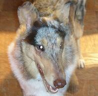
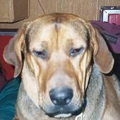
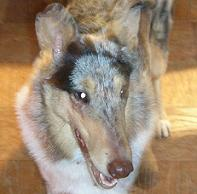
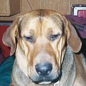

| Its
the new handy dandy thingy! It is designed to make it easier to go from page to page. You no longer have to return to my main page every time you wish to see a new page. Simply click on the face of whose page you want to see and you will magically be sent there.           |
Teddy and the Dude

First week
First House
I made the chicks a house in a shoe box before we
got them but their food and water dishes took up too much
space and I had to give them a larger box.

The Dude


Teddy


Together


Second Week